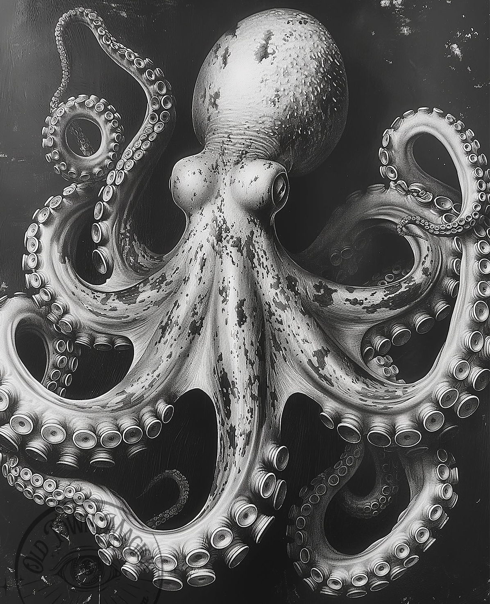

Octopus Map in Nutshell
The most famous octopus map is Serio-Comic War Map by F.W. Rose. Personifying the European countries with vivid details.
The most famous octopus map is Serio-Comic War Map by F.W. Rose. Personifying the European countries with vivid details.